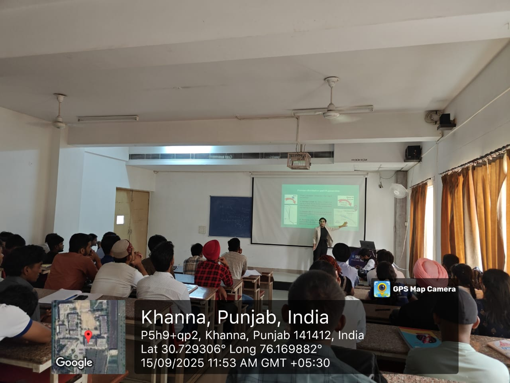
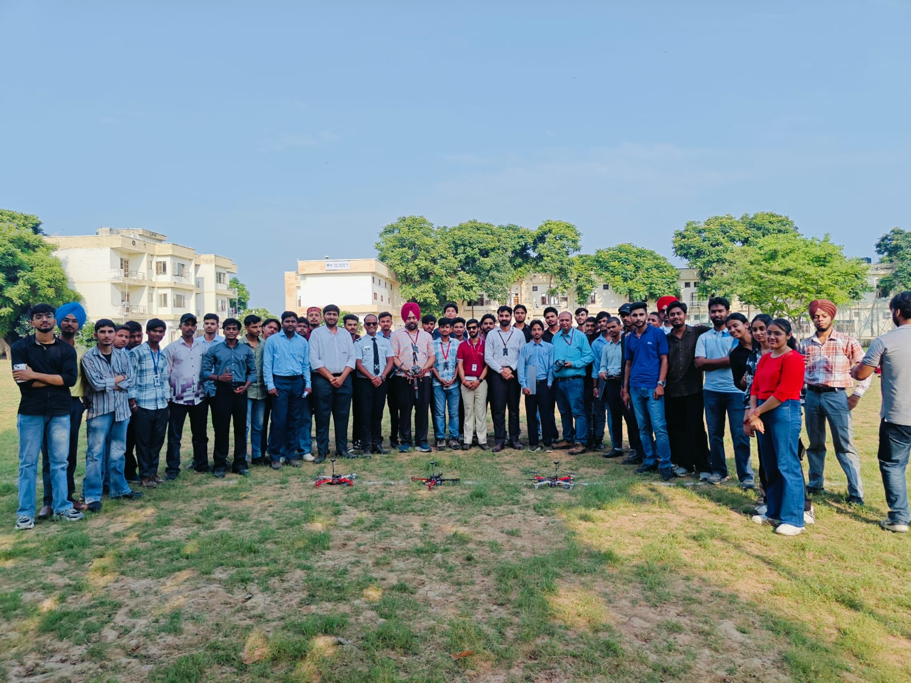
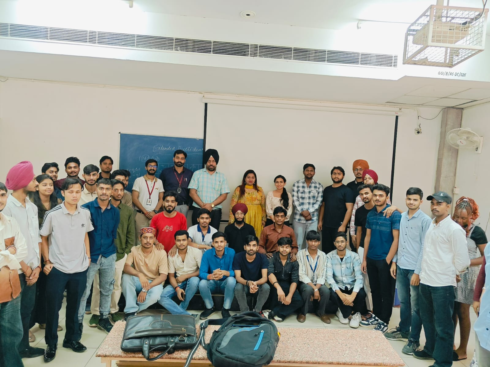
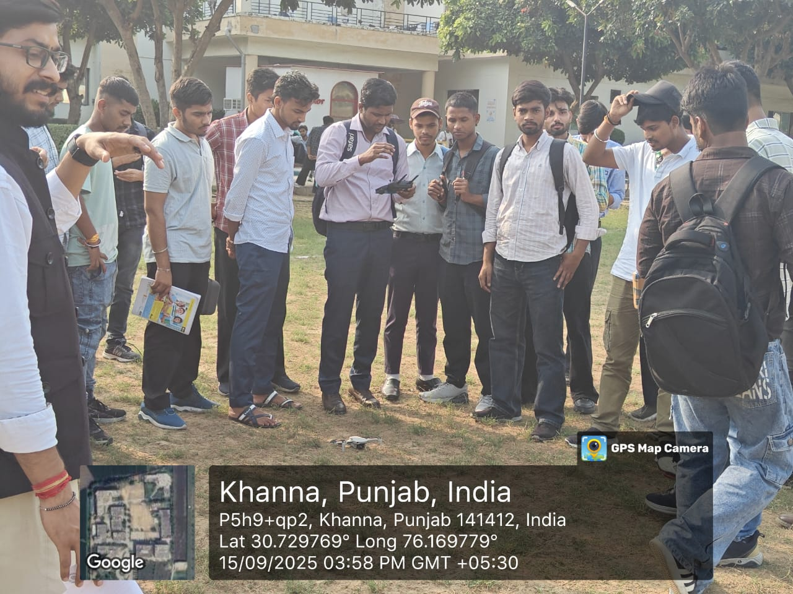

Bootcamp 14.0
About the Bootcamp
The "DIVA: Drone Innovation, Vision & Applications" Bootcamp was successfully conducted from September 15 to September 19, 2025, at Gulzar Group of Institutes, Khanna, Punjab. Organized by Dr. B.R. Ambedkar National Institute of Technology, Jalandhar, and funded by the Ministry of Electronics and Information Technology (MeitY), this comprehensive program engaged 53 participants. The bootcamp aimed to provide an in-depth understanding of drone technology and its diverse applications. It covered essential topics, including the fundamentals of drone technology, basic piloting skills, safety and legal aspects, drone components, flight controllers, and sensors. Participants also gained valuable hands-on experience through drone assembly labs and troubleshooting sessions. Advanced topics such as AI and machine learning integration, and drone applications in surveillance, emergency response, industrial sectors, and commercial use were thoroughly explored. The program also highlighted emerging trends in drone technology and emphasized entrepreneurship opportunities in the rapidly growing drone industry. This initiative effectively equipped participants with the knowledge and skills to leverage drone technology across various sectors.



